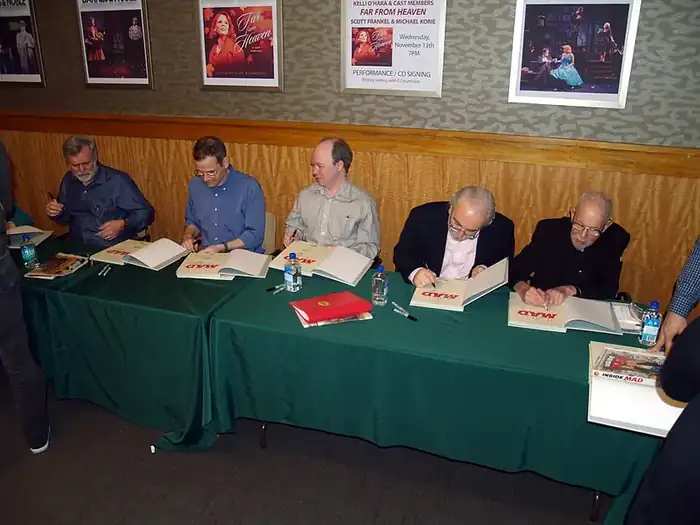

The theory
The logic is that if a first strike cannot disarm the opponent, and retaliation is certain and devastating, then attacking is irrational and the equilibrium is stable. Schelling's work turned this into a theory of bargaining: the threat that does the work is the one that does not need to be carried out.
Maps, diagrams and images


It motivated second-strike forces — submarines, mobile missiles — arms control treaties and, in its purest form, the doctrine that cities would be held hostage. It also motivated a great deal of spending and several doctrines, including limited war, flexible response and counterforce targeting, that are in tension with the simple version.
The near-misses
1962. During the Cuban missile crisis, a Soviet submarine officer, Vasily Arkhipov, refused to approve a nuclear torpedo launch when the boat was being depth-charged and had lost contact with Moscow.
1979 and 1980. American early-warning systems reported incoming Soviet launches; both were traced to a training tape left in the wrong machine and to a failing chip.
1983. Soviet satellite warning reported five American missiles. Stanislav Petrov judged the number too small for a real first strike and did not pass it up the chain. Weeks later, a NATO exercise, Able Archer, was misread in Moscow as preparation for a real attack.
1995. A Norwegian research rocket was briefly tracked as a possible submarine-launched missile, and the Russian nuclear briefcase was activated.
Supported: the absence of great-power war since 1945 is unusual in the historical record, and nuclear weapons plausibly contributed to it. Deterrence also plausibly shaped the restraint in crises such as Cuba and the 1973 Middle East war.
Not supported: that the stability is robust. The near-miss record shows decisions resting on individual judgement and on faulty equipment, several times, within minutes.
The counterfactual problem: we cannot observe the world where deterrence failed, and 'no war' is compatible both with success and with luck. That is why this remains a genuine dispute and not a settled finding.
The archive labels this live debate: the mechanism exists and the frequency of accidents suggests the equilibrium is narrower than its defenders claim.
Why it is in the archive
Because it is a case where a theoretical argument about rationality is used to manage weapons that can end civilisation, and its own history is the best evidence about how much weight it can bear.
Related: dark forest strategy — the same deterrence logic extended to the galaxy — and AI existential risk.
Sources for this page
- Wikipedia, “Mutual assured destruction” — doctrine and criticismen.wikipedia.org
- Wikipedia, “1983 Soviet nuclear false alarm incident” — Petrov's decisionen.wikipedia.org
- Wikipedia, “Able Archer 83” — the exercise and the Soviet reactionen.wikipedia.org
- Wikipedia, “Nuclear winter” — the consequence modelling behind the doctrineen.wikipedia.org
Open resources on this topic
- PapersOpen-access articles: DOAJ · PubMed Central · Internet Archive Scholar
- BooksPublic-domain and borrowable copies: Open Library · Project Gutenberg · Google Books · Internet Archive
More images
Cite this page
Momin, S. (2026). MAD Stability. The Larger World Archive. https://drsamonline.github.io/LARGE_GLOBE/mad-stability.htmlMomin, Sohil. “MAD Stability.” The Larger World Archive, 2026, https://drsamonline.github.io/LARGE_GLOBE/mad-stability.html.Momin, Sohil. “MAD Stability.” The Larger World Archive, 2026. https://drsamonline.github.io/LARGE_GLOBE/mad-stability.html.@misc{mad2026mad,
author = {Momin, Sohil},
title = {MAD Stability},
year = {2026},
howpublished = {The Larger World Archive},
url = {https://drsamonline.github.io/LARGE_GLOBE/mad-stability.html},
note = {Last reviewed 20 November 2026}
}Last reviewed 20 November 2026 · Corrections policy · this page is not peer reviewed